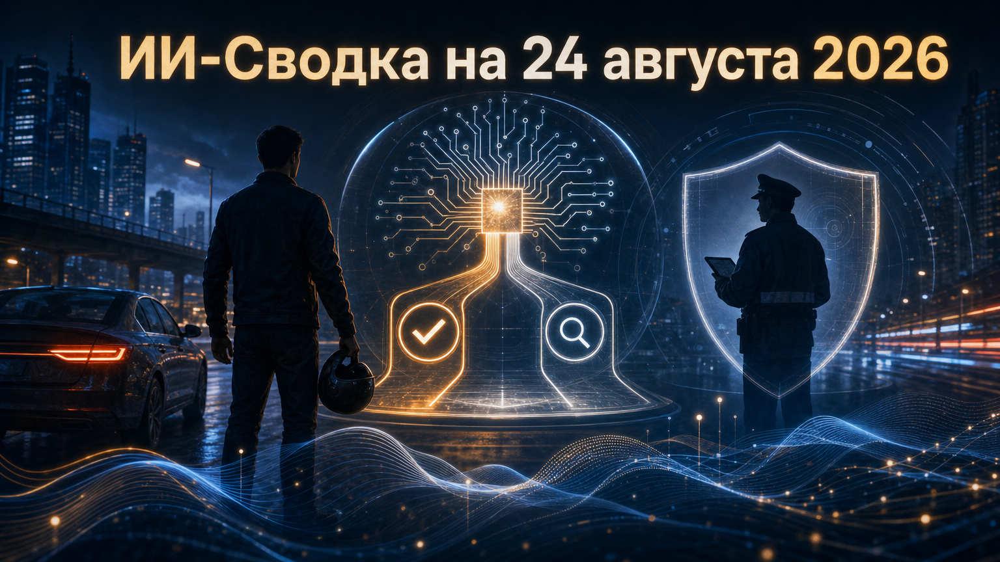

Новостей сегодня меньше, чем обычно
Главный подтверждённый сюжет дня пришёл из регулирования автоматизированных решений, влияющих на работу людей. Нидерландский орган по защите данных назначил Uber штраф €825 млн за практику деактивации водительских аккаунтов без достаточного человеческого контроля.
Дело относится не к генеративным моделям, а к алгоритмическому управлению на платформе. Однако оно важно для компаний, которые передают ИИ-системам решения с существенными последствиями для сотрудников, подрядчиков и клиентов.
Нидерландский орган по защите данных назначил Uber штраф €825 млн за автоматизированные деактивации аккаунтов водителей. Как сообщает TechCrunch, предметом жалоб стали недостаточное предупреждение водителей и отсутствие достаточного человеческого надзора при решениях, которые лишали их доступа к платформе.
Uber не согласилась с решением и намерена его обжаловать, поэтому окончательная юридическая судьба штрафа ещё не определена. Тем не менее масштаб санкции делает кейс заметным сигналом для платформ и работодателей: автоматизация решений о доступе к работе, выплатах, блокировках или иных серьёзных последствиях требует объяснимых процедур, возможности оспаривания и реального участия человека, а не формальной проверки алгоритма.